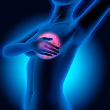
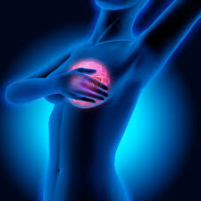
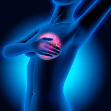

Santé et Femmes
 

- Cancer du sein
- Cancer du côlon-rectum
- Cancer du poumon
Cancer chez la femme
Chaque jour, dans le monde, on compte plus de 380 000 naissances .

Chaque jour, dans le monde, on compte plus de 380 000 naissances .
Le mot femme provient du latin femina. Une femme est une personne du sexe féminin. Il s'agit d'un terme qui est employé en contraste à l'homme. Durant des siècles, la société considérait que la femme devait se limiter à accomplir ses fonctions d'épouse et de mère, cependant dans certains peuples comme les esclaves noirs en Amérique, la femme a une place importante, elle est au centre de la famille, elle se construit autour d’elle. Le mot santé provient du mot latin sano qui signifie guérir, rendre sain et de sanus qui signifie en bonne santé.
Les femmes doivent faire face à des inégalités, par exemple dans le monde du travail, elles touchent moins de salaire, dans le monde politique, elles doivent faire face à des insultes et elles ne sont pas écoutées.Face à toutes ces inégalités entre les hommes et les femmes dans plusieurs domains, nous voulons comprendre si il existe des inégalités à l’accès au soin spécifique aux femmes entre les femmes du monde entier.
Nous verrons l’accès aux soins spécifiques aux femmes dans l’ordre chronologique.Dans un premier temps, nous verrons leur accès aux moyens de contraceptions pour les jeunes filles mais aussi pour les femmes âgées de 15 à 49 ans. Ensuite au cours de la vie d’une femme, elle peut donner naissance à des enfants ce qui encours beaucoup de soins pour la femme. Et enfin, nous étudierons les maladies qui touchent fortement les femmes à l’âge adulte.
XVIIIème
Stéréotypes confirmé par les médecins " cerveau plus petit"
Début de la médicalisation de la sexualité
L'utérus au coeur des études + Apparitions des medecins accoucheurs et des sages femmes
1980: Aux Etats-Unis, repenser la médecine et la recherche en fonction du genre
1995: OMS crée un département genre et santé de la femme
2000: Apparition de structures qui travaillent sur la médecine genrée en Allemagne,Suède, Pays-Bas et l'Irlande.
Les femmes ont été souvent exclues des essais cliniques et des recherches pour certaines maladies car elles sont coupables de tomber enceinte et donc de fausser les résultats. Par exemple, aux Etats-Unis, la prévention est faite pour les crises cardiaques mais pas pour les femmes cependant c'est la première cause de mortalité chez elles. Les femmes sont exclues des essais cliniques ce qui entraine des conséquences importantes par exemple, elles sont plus touchées par les effets secondaires des médicaments, car tout simplement les médicaments ne sont pas essayés sur elles.
Il y a aussi des inégalités entre les hommes et les femmes au sein de la grande construction des grands problèmes de santé publique car elles ont leurs " cancers spécifiques". Mais aussi dans la prise en charge, par exemple un homme opéré du cancer de la prostate, les injections ou les crèmes pour l'après sont pris en charge. Alors qu'une femme atteinte d'un cancer du sein, elle paye les lasers...
De plus, en 2018, l'espérance de vie des femmes en France est de 85.3 ans contre 79.4 ans pour les hommes. Mais l'espérance de vie en bonne santé des femmes est de 64.5 ans contre 63.4 ans pour les hommes. L'écart de l'espérance de vie est importante cependant l'écart de l'espérance de vie en bonne santé est moins important du au fait que la femme est mis à l'éccart dans les essais cliniques et les traitements.
created with
Website Builder Software .